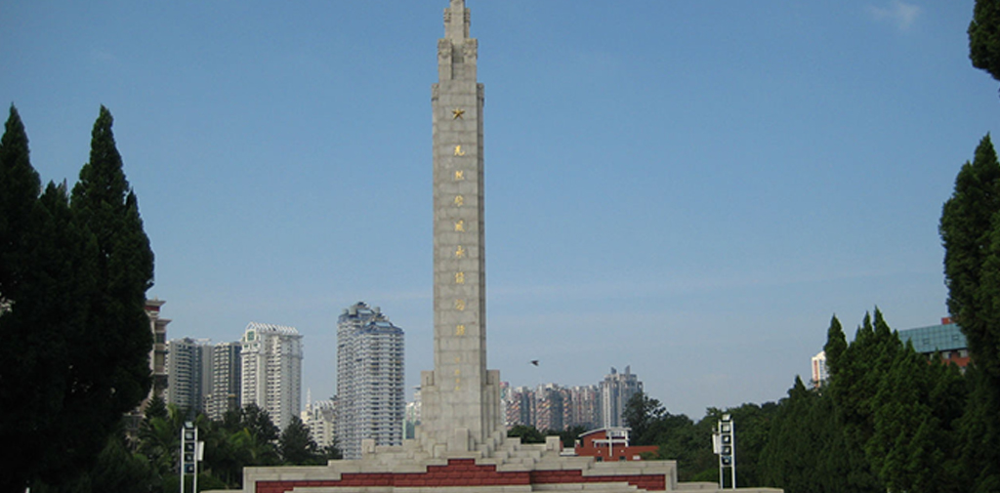
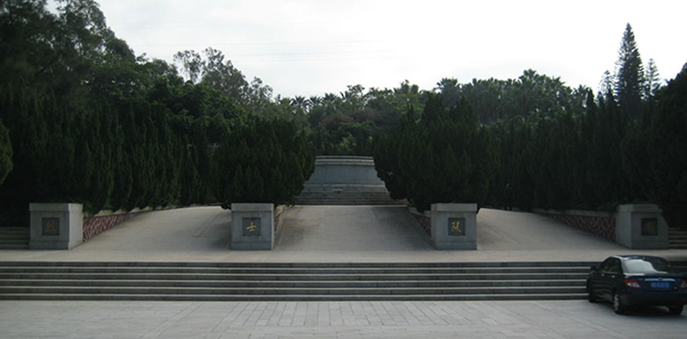
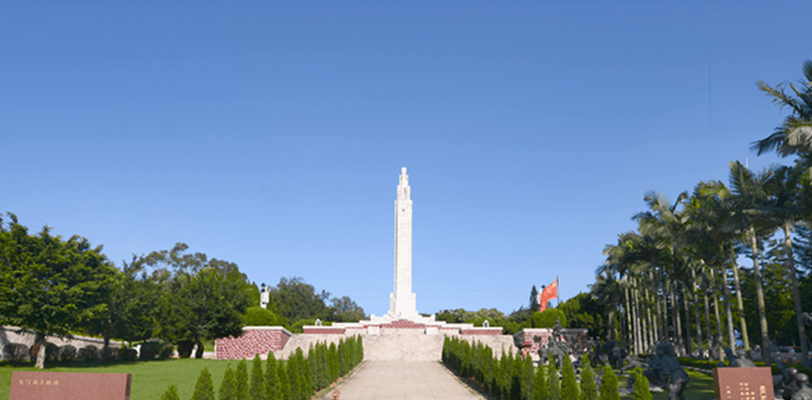
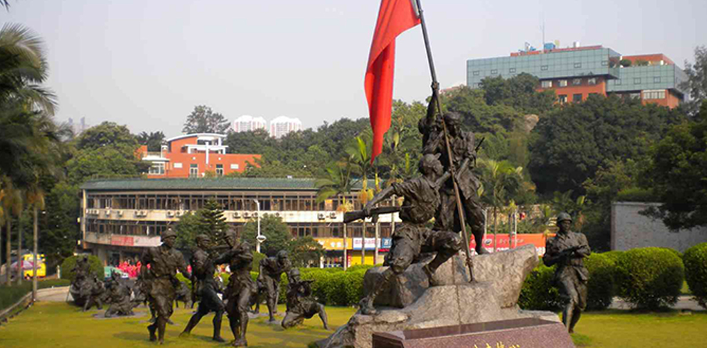

厦门革命烈士陵园
来源： 厦门革命烈士陵园
   
厦门革命烈士陵园位于厦门市思明区湖滨南路，纪念着为中国革命事业献出宝贵生命的烈士们。这座陵园于1955年开始兴建，占地面积达14.7亩，北侧为环岛路，南侧为梧材山路，大门正对湖滨南路，是一座具有浓郁革命氛围的纪念建筑。
厦门革命烈士陵园最为突出的特点，是它的建筑风格。整座陵园的建筑风格与文物考古、人文历史、都市公园相结合，寓意深刻而有力度。入口处的“赞美人民”雕塑，是整个陵园的中心景点之一，以三名身披苦装的工农兵形象为代表，表达了中国革命事业中人民力量的巨大贡献。另外，陵园内还有“英烈寿”雕塑、通往英烈墓区的红色小桥、周围种有纪念树木等，巍然屹立，让人对那些为了革命事业献身的先烈们心怀崇敬之情。厦门革命烈士陵园不仅是纪念革命先烈们的地方，更是厦门市市民和游客们了解中国革命历史和传统文化、思考革命事业的发展和未来的地方。这里也是一个可以接受爱国主义教育、感悟历史精神、自主探究革命传统的教育基地。
厦门革命烈士陵园是一处值得大家前来缅怀和纪念革命先烈的地方，它凝聚着中国人民为民族、为人民、为国家奋斗不息的精神，对于思考怎样走好今后的路也有着深刻的意义。
游客在进入厦门革命烈士纪念馆及英烈墓区时，应保持内心的敬意，不得嬉闹、追逐、吸烟、喧哗等不文明行为。